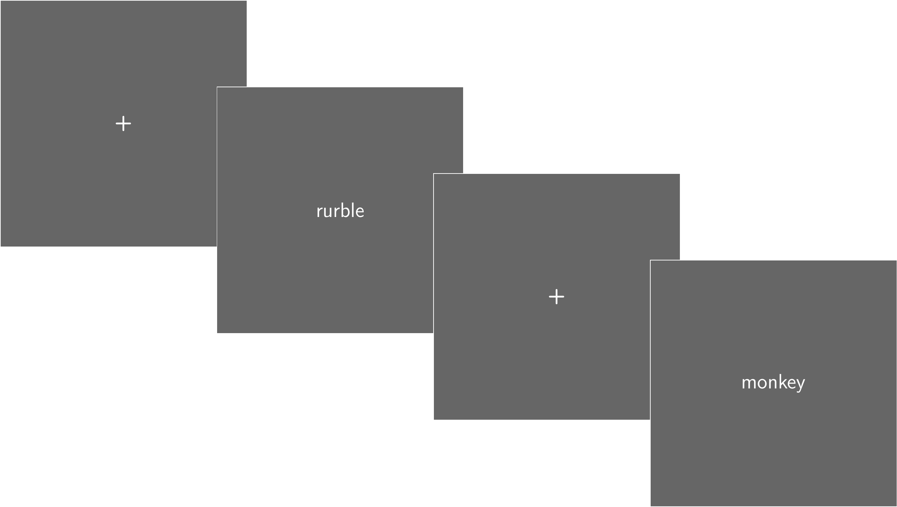
All models are wrong, and so is model comparison
Bruno Nicenboim
Cognitive Science & AI, Tilburg University
Outline
- Computational modeling: the what, why, and how
- Case study: What happens to model comparison when our models are misspecified?
- Wrapping up: key takeaways and conclusions
Computational Psycholinguistics Meeting
Dec 18–19, 2025, Utrecht, the Netherlands
Submit your abstract by June 29, 2025 (AoE)
We welcome work on computational models explaining/predicting human language
- production
- perception
- learning
- processing
What is computational modeling?
- A formal descriptions of human thought and behavior.
- A mediator between theory and data
Computational modeling is the process by which a verbal description is formalized to remove ambiguity […], while also constraining the dimensions a theory can span. In the best of possible worlds, modeling makes us think deeply about what we are going to model (e.g., which phenomenon or capacity), in addition to any data, both before and during the creation of the model and both before and during data collection.
(Guest & Martin, 2022)
Why a computational model?
- As an alternative to an implicit model:
- in which the assumptions are hidden,
- their internal consistency is untested,
- their logical consequences are unknown,
- and their relation to data is unknown. ]
Goal of model comparison
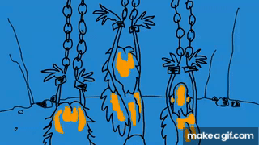
- Which theory is closer to the truth?
- The model that best accounts for the data is used as proxy.
- We implement theories as Bayesian models and compare their predictive power.
Two approaches
Bayes factor
- Evaluates data support through “prior” model predictions.
- Strong prior dependence when models differ qualitatively.
Bayesian Cross-Validation
- Evaluates data support through “posterior” model predictions on held out data.
- Conservative approach; cautious about selecting models.
- A cruel realist: penalizes models for not having optimal prior information.
- A fair judge: ensures fairness by allowing models to perform at their best (Jaynes 2003)
TL;DR
Important considerations in model comparison
- Generalization is within observed data range
- A predictive model is not necessarily a true model
- Quantitative evaluation cannot replace the qualitative understanding of data patterns.
Case Study: How do model comparison work when our models are mispecified?
(and our models are always mispecified)
Outline of the case study
- Simulate data from a given model under different conditions.
- Fit some conditions with models different from the true model (mispecification).
- Compare the models with BF and CV.
- Repeat.
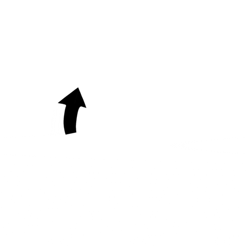
Simulated task
Lexical decision task (LDT)
True generative process
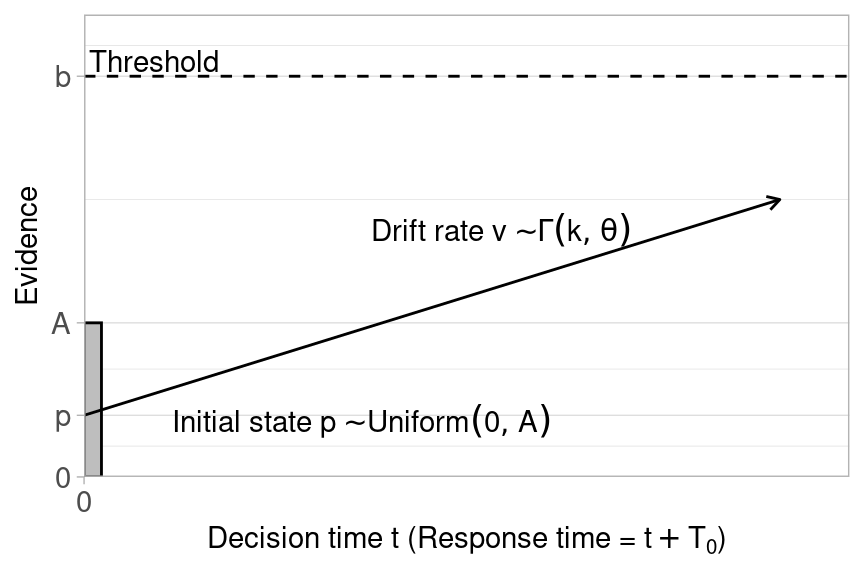
Decision in LDT as a Linear Ballistic Accumulator (LBA: Brown and Heathcote 2008) with a Gamma distribution for the rates (Terry et al. 2015).
True values
| difficulty | emphasis | A | b | scale_v1 | shape_v1 | scale_v2 | shape_v2 | t0 |
|---|---|---|---|---|---|---|---|---|
| easy | accuracy | 0.5 | 5.1 | 5.0 | 6 | 12 | 1 | 0.1 |
| hard | accuracy | 0.5 | 5.1 | 4.2 | 6 | 12 | 1 | 0.1 |
| easy | speed | 3.9 | 4.1 | 5.0 | 6 | 12 | 1 | 0.1 |
| hard | speed | 3.9 | 4.1 | 4.2 | 6 | 12 | 1 | 0.1 |
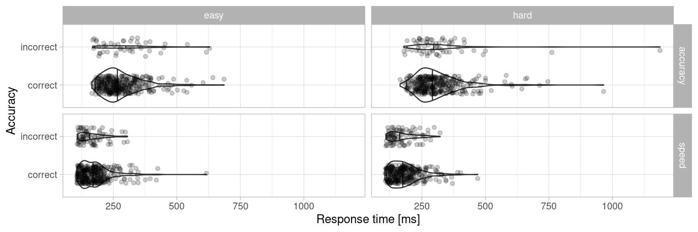
| emphasis | difficulty | correct | rt_correct | sd_correct | rt_incorrect | sd_incorrect |
|---|---|---|---|---|---|---|
| accuracy | easy | 0.89 | 281 | 79 | 305 | 112 |
| accuracy | hard | 0.85 | 311 | 95 | 323 | 145 |
| speed | easy | 0.80 | 179 | 61 | 164 | 47 |
| speed | hard | 0.78 | 184 | 58 | 171 | 50 |
Case 1. Modeling only fast answers (Speed emphasis)
1.a Models under consideration
1. Log-Normal Race (LNR) model
Simple race between accumulators–threshold and drift can’t be disentangled (conceptually similar to LBA)
- <RT, response> \(\sim\) LNR
- very weak priors
2. Theory-agnostic model with normal likelihood
- RT \(\sim\) Normal
- response \(\sim\) Bernoulli
3. Theory-agnostic model with shifted log-normal likelihood
- (RT \(-\) shift) \(\sim\) LogNormal
- response \(\sim\) Bernoulli
1.a PPC
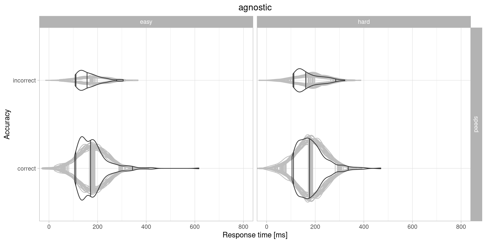
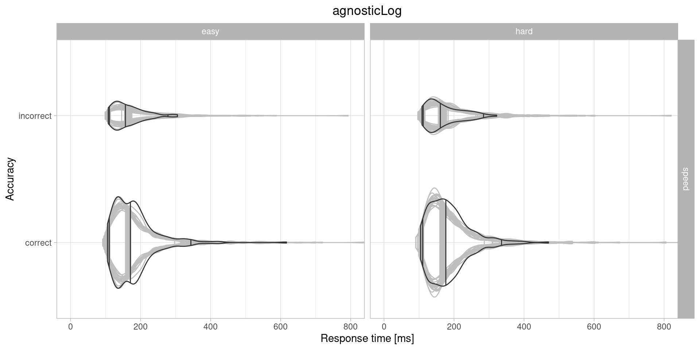
1.a Model comparison
Bayes factor
BF logBF
agnosticLog 1.0e+00 0
LNRace 1.5e+14 33
agnostic 1.0e+82 189LOO CV
elpd_diff se_diff n_se
agnosticLog 0 0.0 NaN
LNRace -28 5.3 -5.4
agnostic -176 28.3 -6.2The most flexible model won!
1.b Another competitor
4. Ollman’s (1966) fast guess model
- mixture of two processes
- a guessing mode
- a task-engaged mode
- captures the speed-accuracy trade-off because of the wrong reasons
1.b Model comparison
Bayes factor
BF logBF
agnosticLog 1.0e+00 0
FG 5.5e+09 22
LNRace 1.5e+14 33
agnostic 1.0e+82 189LOO-CV
elpd_diff se_diff n_se
agnosticLog 0 0.0 NaN
LNRace -28 5.3 -5.4
FG -32 8.3 -3.8
agnostic -176 28.3 -6.2The more flexible model is still the winner…
Only cognitive models
Bayes factor
BF logBF
FG 1 0
LNRace 27200 10LOO-CV
elpd_diff se_diff n_se
LNRace 0.0 0 NaN
FG -3.6 11 -0.32- BF chooses the wrong model. (But the LNR had weak prior.)
- CV is undecided.
1.b + better priors
Bayes factor
BF logBF
agnosticLog 1.0e+00 0
LNRace_reg_priors 4.6e+06 15
FG 5.5e+09 22
LNRace 1.5e+14 33
agnostic 1.0e+82 189LOO-CV
elpd_diff se_diff n_se
agnosticLog 0 0.0 NaN
LNRace_reg_priors -28 5.3 -5.4
LNRace -28 5.3 -5.4
FG -32 8.3 -3.8
agnostic -176 28.3 -6.2Only cognitive models
Bayes factor
BF logBF
LNRace_reg_priors 1.0e+00 0.0
FG 1.2e+03 7.1
LNRace 3.3e+07 17.3LOO-CV
elpd_diff se_diff n_se
LNRace_reg_priors 0.00 0.00 NaN
LNRace -0.04 0.26 -0.15
FG -3.68 11.14 -0.33- Now BF chooses a conceptually more correct model.
- CV is still undecided.
Case 1.c Yet another competitor
- A more flexible implementation of the LNR model
- It relaxes the assumption that the noise parameter is the same for all the accumulators.
- with very uninformative priors
- with regularizing priors.
1.c PPC


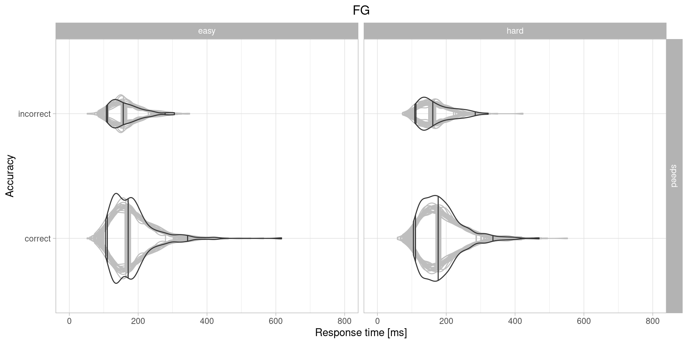
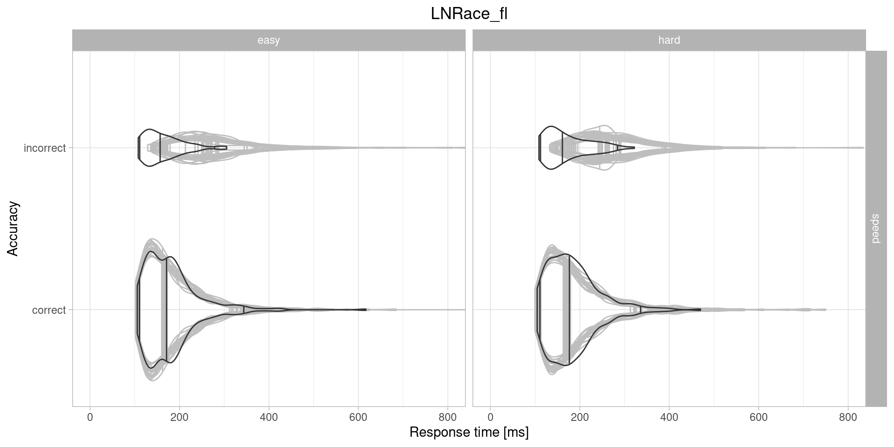
1.c PPC
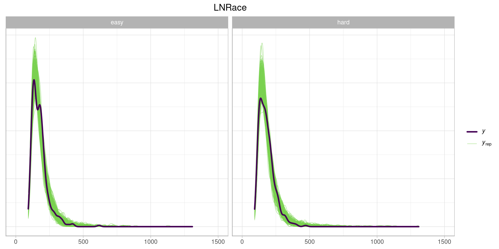
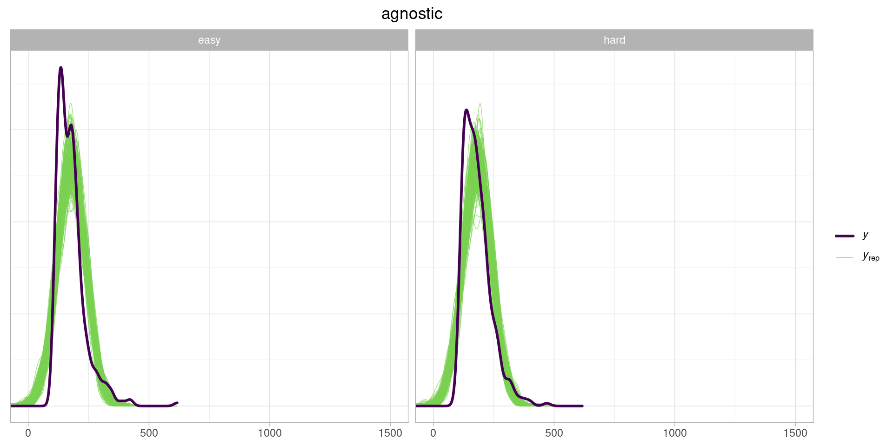
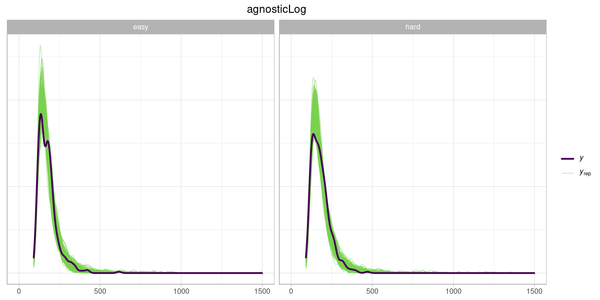
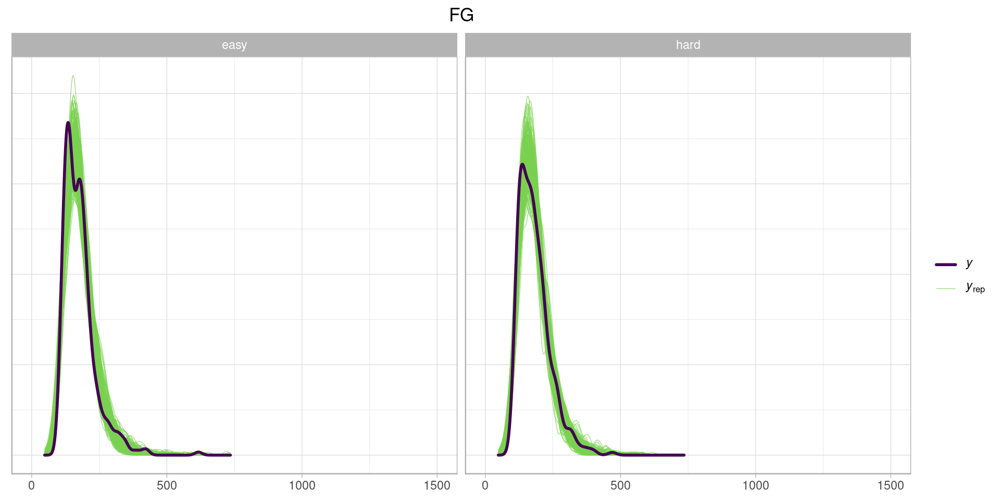
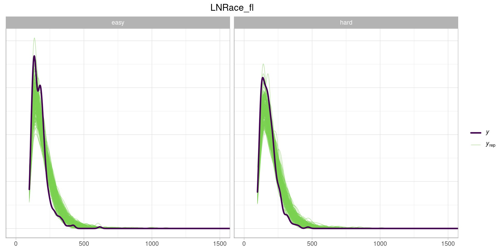
1.c Model comparison 3
Bayes factor
BF logBF
LNRace_fl_reg_priors 1.0e+00 0.0
agnosticLog 3.6e+02 5.9
LNRace_fl 1.2e+06 14.0
LNRace_reg_priors 1.6e+09 21.2
FG 2.0e+12 28.3
LNRace 5.3e+16 38.5
agnostic 3.6e+84 194.7LOO-CV
elpd_diff se_diff n_se
agnosticLog 0.0 0.0 NaN
LNRace_fl_reg_priors -2.3 4.5 -0.51
LNRace_fl -2.4 4.5 -0.53
LNRace_reg_priors -28.2 5.2 -5.37
LNRace -28.2 5.2 -5.38
FG -31.9 8.3 -3.84
agnostic -175.8 28.3 -6.21- BF chooses the flexible LNR model with good priors.
- CV is still undecided.
Only cognitive models
Bayes factor
BF logBF
LNRace_fl_reg_priors 1.0e+00 0
LNRace_fl 1.2e+06 14
LNRace_reg_priors 1.6e+09 21
FG 2.0e+12 28
LNRace 5.3e+16 38LOO-CV
elpd_diff se_diff n_se
LNRace_fl_reg_priors 0.00 0.00 NaN
LNRace_fl -0.07 0.08 -0.82
LNRace_reg_priors -25.90 5.78 -4.48
LNRace -25.94 5.73 -4.52
FG -29.58 8.22 -3.60- Both methods agree.
Fast guess vs Flexible LNR
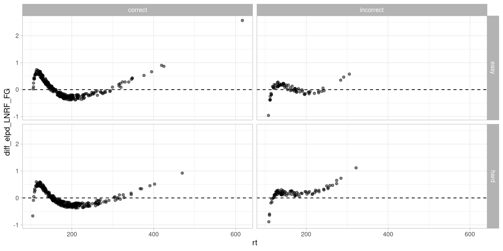
Case 2. Accuracy emphasis
2. Posterior predictive check
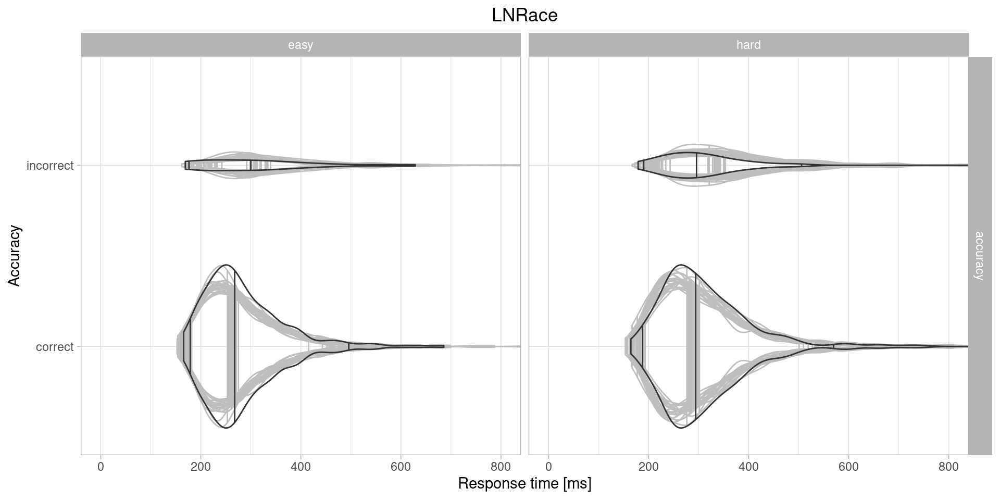
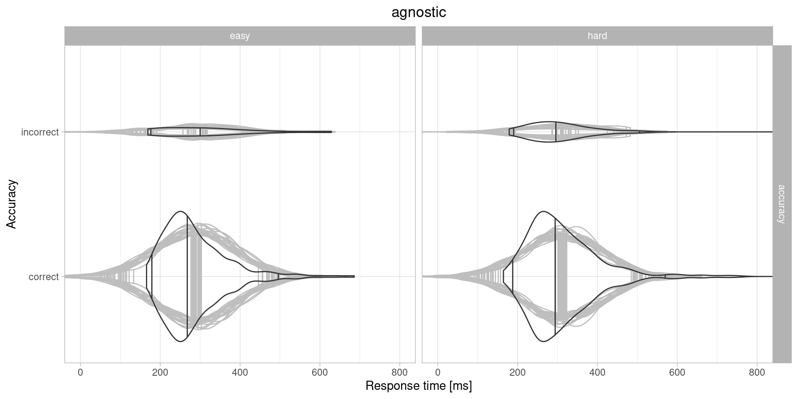
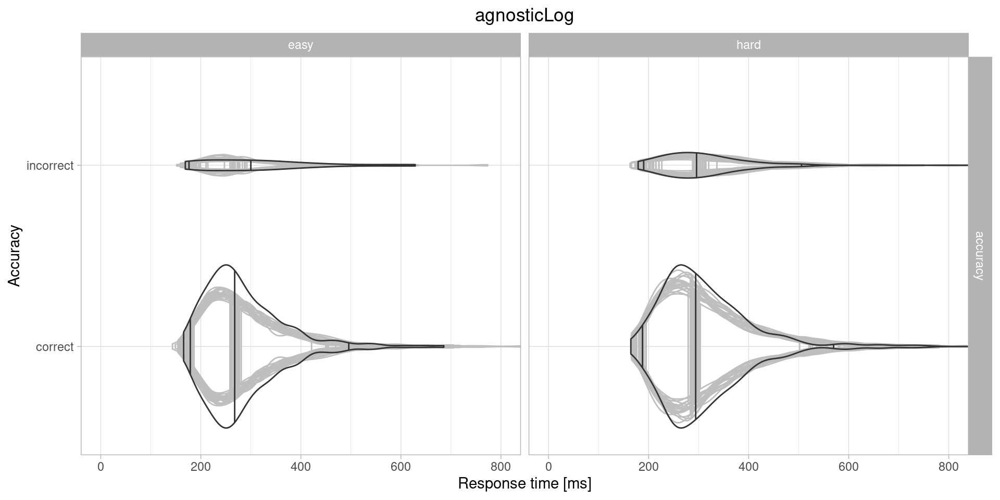
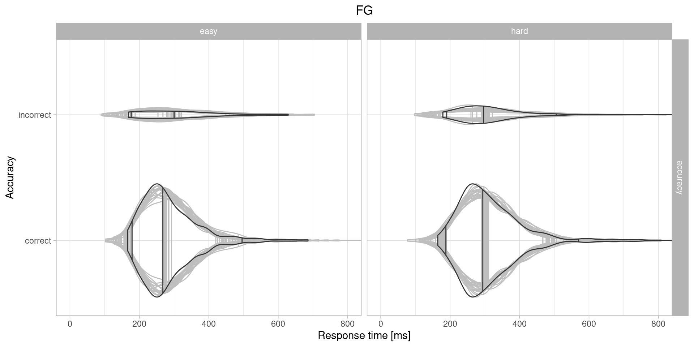
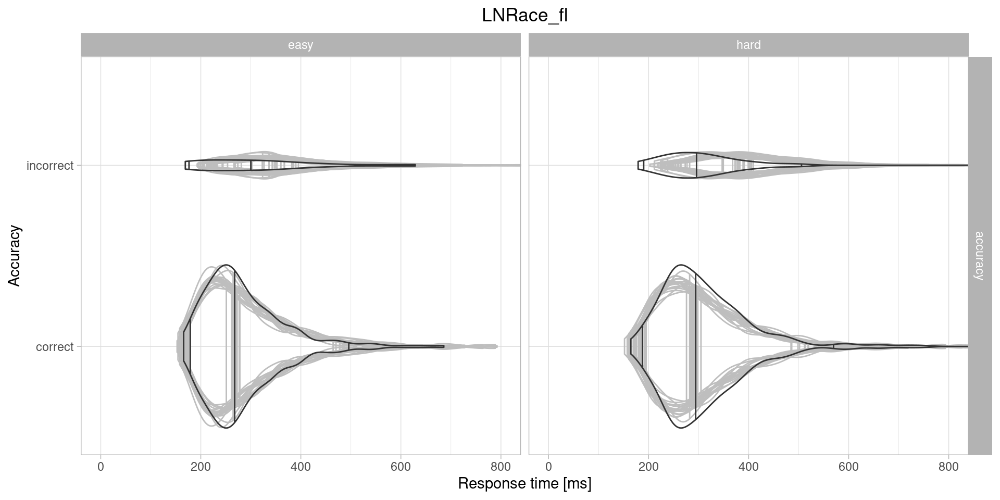
2. Model comparison
Bayes factor
BF logBF
agnosticLog 1.0e+00 0
FG 8.2e+05 14
LNRace_reg_priors 2.2e+06 15
LNRace_fl_reg_priors 5.0e+06 15
LNRace_fl 7.0e+12 30
LNRace 1.4e+14 33
agnostic 2.5e+73 169LOO-CV
elpd_diff se_diff n_se
agnosticLog 0 0.0 NaN
FG -23 7.7 -3.0
LNRace_fl_reg_priors -25 7.2 -3.5
LNRace_fl -25 7.2 -3.5
LNRace -28 8.2 -3.4
LNRace_reg_priors -28 8.2 -3.4
agnostic -182 42.1 -4.3- Both methods select the theory-agnostic model
Only cognitive models
Bayes factor
BF logBF
FG 1.0e+00 0.0
LNRace_reg_priors 2.7e+00 1.0
LNRace_fl_reg_priors 6.1e+00 1.8
LNRace_fl 8.4e+06 15.9
LNRace 1.7e+08 19.0LOO-CV
elpd_diff se_diff n_se
FG 0.0 0 NaN
LNRace_fl_reg_priors -1.8 11 -0.16
LNRace_fl -1.9 11 -0.17
LNRace -4.8 12 -0.42
LNRace_reg_priors -4.8 11 -0.42. . .
- Fast Guess model is selected!
Case 3. Considering both speed and accuracy emphasis
3. PPC
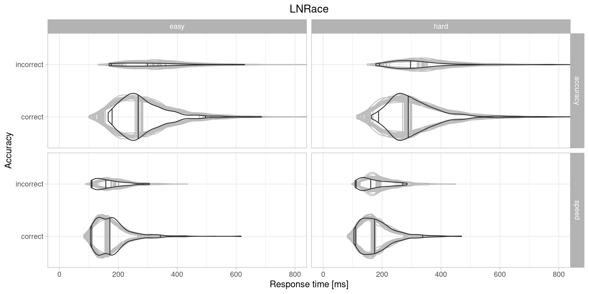
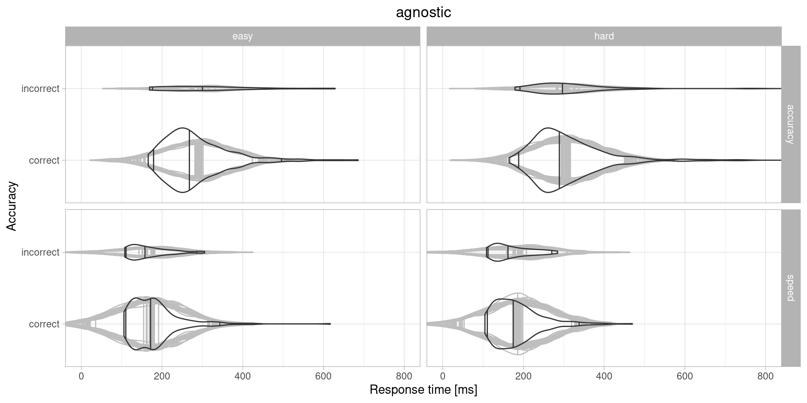
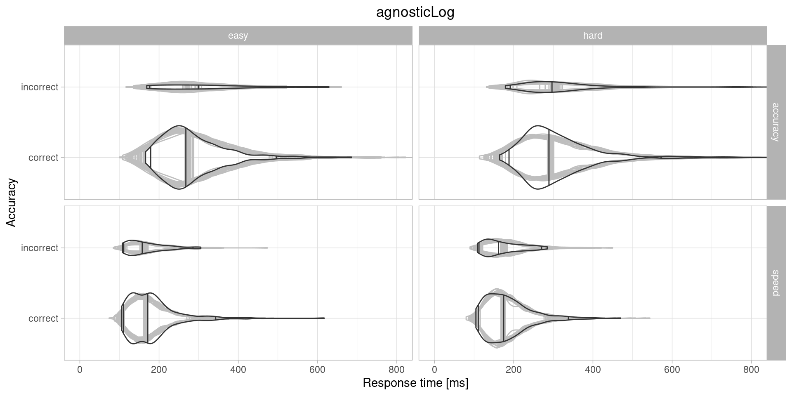
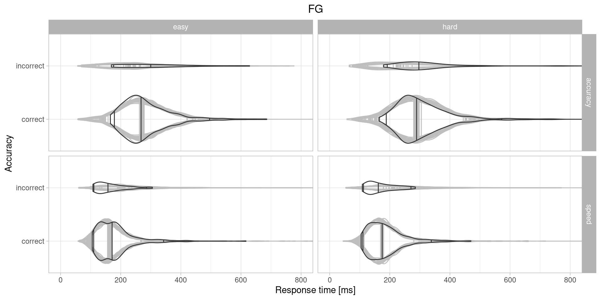
3. Model comparison
Bayes factor
BF logBF
LNRace_fl_reg_priors 1.0e+00 0
LNRace_fl 8.0e+09 23
agnosticLog 1.8e+14 33
LNRace_reg_priors 1.9e+37 86
LNRace 4.7e+48 112
FG 3.7e+53 123
agnostic 2.3e+180 415LOO-CV
elpd_diff se_diff n_se
LNRace_fl 0.00 0.00 NaN
LNRace_fl_reg_priors -0.06 0.34 -0.18
agnosticLog -19.70 13.53 -1.46
LNRace_reg_priors -92.93 14.88 -6.24
LNRace -93.01 14.95 -6.22
FG -113.70 18.80 -6.05
agnostic -413.11 63.55 -6.50- BF does select the best model! (but it still selects theory-agnostic as better than some conceptually correct models)
- CV can’t distinguish between the theory agnostic the best model.
Key Takeaways
Don’t mistake the map for the territory
But don’t throw the map away!
Generalization stays within observed data
Predictive ≠ true model
Explanatory models need constraints:
- data, theory, and biology/physics
Quantitative checks ≠ full understanding
Good models make testable, risky predictions
Bayes Factors: priors matter (a little or a lot)
CV: often inconclusive without clear gains
References
Brown, Scott D., and Andrew Heathcote. 2008. “The Simplest Complete Model of Choice Response Time: Linear Ballistic Accumulation.” Cognitive Psychology 57 (3): 153–78. https://doi.org/10.1016/j.cogpsych.2007.12.002.
Epstein, Joshua M. 2008. “Why Model?” Journal of Artificial Societies and Social Simulation 11 (4): 12. https://www.jasss.org/11/4/12.html.
Henrich, Joseph, Steven J. Heine, and Ara Norenzayan. 2010. “The Weirdest People in the World?” Behavioral and Brain Sciences 33 (2-3): 61–83. https://doi.org/10.1017/S0140525X0999152X.
Jaynes, Edwin T. 2003. Probability Theory: The Logic of Science. Cambridge University Press.
Lissón, Paula, Dorothea Pregla, Bruno Nicenboim, Dario Paape, Mick van het Nederend, Frank Burchert, Nicole Stadie, David Caplan, and Shravan Vasishth. 2021. “A Computational Evaluation of Two Models of Retrieval Processes in Sentence Processing in Aphasia.” Cognitive Science 45: e12956. https://onlinelibrary.wiley.com/doi/full/10.1111/cogs.12956.
Navarro, Danielle J. 2019. “Between the Devil and the Deep Blue Sea: Tensions Between Scientific Judgement and Statistical Model Selection.” Computational Brain & Behavior 2 (1): 28–34. https://doi.org/10.1007/s42113-018-0019-z.
Nicenboim, Bruno, Daniel J. Schad, and Shravan Vasishth. 2025. Introduction to Bayesian Data Analysis for Cognitive Science. 1st ed. Chapman; Hall/CRC. https://doi.org/10.1201/9780429342646.
Nicenboim, Bruno, Shravan Vasishth, and Frank Rösler. 2020. “Are Words Pre-Activated Probabilistically During Sentence Comprehension? Evidence from New Data and a Bayesian Random-Effects Meta-Analysis Using Publicly Available Data.” Neuropsychologia 142. https://doi.org/10.1016/j.neuropsychologia.2020.107427.
Ollman, Robert. 1966. “Fast Guesses in Choice Reaction Time.” Psychonomic Science 6 (4): 155–56. https://doi.org/https://doi.org/10.3758/BF03328004.
Terry, Andrew, A. A. J. Marley, Avinash Barnwal, E.-J. Wagenmakers, Andrew Heathcote, and Scott D. Brown. 2015. “Generalising the Drift Rate Distribution for Linear Ballistic Accumulators.” Journal of Mathematical Psychology 68-69 (October): 49–58. https://doi.org/10.1016/j.jmp.2015.09.002.
Vehtari, Aki, and Jouko Lampinen. 2002. “Bayesian Model Assessment and Comparison Using Cross-Validation Predictive Densities.” Neural Computation 14 (10): 2439–68. https://doi.org/10.1162/08997660260293292.
Vehtari, Aki, and Janne Ojanen. 2012. “A Survey of Bayesian Predictive Methods for Model Assessment, Selection and Comparison.” Statistical Surveys 6 (0): 142–228. https://doi.org/10.1214/12-ss102.
Wang, Wei, and Andrew Gelman. 2014. “Difficulty of Selecting Among Multilevel Models Using Predictive Accuracy.” Statistics at Its Interface 7: 1–8.